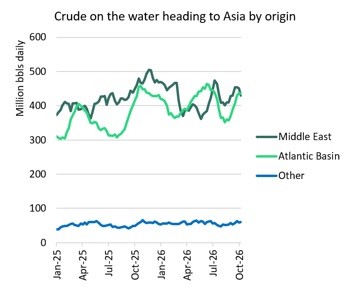

The VLCC market is softening, but we contend that the downside is limited. Exceptionally high freight costs have softened long-haul Atlantic-to-Asia demand. Asian refiners are increasingly favouring shorter-haul Middle East barrels offered either on a delivered basis or via ship-to-ship (STS) transfer in the Gulf of Oman. This will reduce VLCC tonne-mile demand. But the VLCC fleet is extraordinarily inefficient with the ongoing Middle East disruption, and any agreement to normalise Hormuz transits seems vanishingly unlikely anytime soon.
US Gulf-China VLCC spot rates have softened to $452k/day, a fall of $186k/day from their peak of $638k/day two weeks ago. Over the same period, West Africa-China rates have fallen by $212k/day, from $763k/day to $551k/day. Gulf of Oman-China rates have fallen from $913k/day to $657k/day over the past two weeks. But this is a correction from scarcely believable freight rates to exceptional ones. Rates remain at all-time highs when excluding the extremes reached over the past month.
A few factors have allowed the Gulf of Oman VLCC position list to lengthen and softened rates, according to our brokers. Increased Iranian attacks since the beginning of October have contributed to lower Gulf of Oman ship-to-ship activity. STS transfers of crude cargoes in the Gulf of Oman fell by 2.2m b/d to 4.45m b/d w-o-w in the week ending Sunday, according to Vortexa. Additionally, weather-related discharge delays in China and South Korea have eased, freeing up ships to return the Middle East. Charterers are also likely holding back to tame Middle East rates.
A reduction in stems on offer in most Atlantic markets explains why Atlantic rates have softened, despite a large share of the fleet tied up East of Suez.
Roughly 25% of the non-sanctioned VLCC fleet is either active in the Hormuz shuttle fleet, in ballast in the Middle East, or ballasting towards the Middle East and less than 10 days away. As more ships discharge in the East, this number will likely grow, especially given the softening Atlantic market.
But despite recent softening, a month of scarcely believable high freight rates is beginning to affect VLCC demand.
Refiners in Asia are feeling the effects of high freight costs. At times in late September, Singapore’s medium-sour margins were negative, falling from an average of $20.41/bl in August, according to the IEA. Middle East producers are responding by increasingly offering crude to Asian buyers on a delivered basis or offering cargoes via STS in the Gulf of Oman, effectively shouldering the Hormuz transit risk and/or absorbing the high freight cost themselves. Middle East producers are also offering November-loading term contracts at multi-year lows, according to Argus.
Even with current softening rates in the Atlantic, the cost of VLCC freight explains why Asian buying behaviour is changing.
The cost to move crude oil East on a VLCC is roughly $29/bbl from the US Gulf to China, compared to $15.6/bbl for a cargo from the Gulf of Oman. This figure does not account for insurance cost or demurrage costs. In comparison, the cost of sending a VLCC-equivalent volume on three Aframaxes from the US Gulf to Europe is $15/bbl, half the cost of a sending a US Gulf cargo East on a VLCC. This means US oil is more likely to be shipped on the smaller segments to Europe instead of on a VLCC East.
Asian buyers can substitute shorter-haul Middle East crude for Atlantic barrels, while US crude becomes increasingly competitive into Europe rather than Asia. Crude exports from the Middle East have recovered to pre-war levels in recent weeks. Excluding Iranian volumes, Middle East crude exports averaged 17.84m b/d in the first half of October, almost 500k b/d above February 2026 levels before the war began.
The large volume of crude on the water destined for Asia reduces the urgency for Asian buyers to pay almost any delivered price to secure additional barrels. The daily average of crude on the water towards Asia is 933m bbls so far this month, according to Vortexa. This is 45m bbls higher than in February before the Iran war began. So far this month, crude on the water from the Middle East to Asia is at the highest level since July, while crude on the water from the Atlantic to Asia is at the highest level since June.

Source: Vortexa
Inefficiency will help offset falling VLCC voyage distance
More Middle East-to-Asia voyages and fewer US Gulf, Brazil and West Africa-to-Asia voyages will shorten average voyage distances and decrease VLCC tonne-mile demand.
Ordinarily, this would be bearish for VLCCs, but this is not an ordinary market. The VLCC fleet is remarkably inefficient, which should arrest much further softening in rates.
As volumes exported from the Middle East Gulf have increased over the past few months, logistical strains on the Hormuz shuttle system have emerged. Limited STS equipment in the Gulf of Oman has lengthened waiting time. Some STS is shifting to the west coast of India, further lengthening voyage times for the shuttle fleet. In August, the average shuttle voyage from inside the Middle East Gulf to transfer cargo onto a receiver vessel took 11.5 days, according to Vortexa. Since September, shuttle voyages have averaged 13.6 days.
A large number of VLCCs are also currently tied up on a long-haul voyage from the Atlantic. Over the past four weeks, a daily average of 261m bbls of crude has been onboard VLCCs heading from the Atlantic towards Asia, the highest volume since late July.
Red Sea disruption creates another source of inefficiency. Roughly 40% of Yanbu-origin crude heading to Asia since August has travelled via the Suez Canal and around the Cape of Good Hope instead of transiting the Bab-el-Mandeb. For voyages to China, routing around the Cape adds roughly 32 days.
The main downside risk to rates is agrowing surplus of VLCCs in the Middle East. If Gulf of Oman STS activity remains constrained as more vessels return from Asia and Atlantic cargo availability stays weak, the position list will lengthen and rates could fall further.
However, the geopolitical situation remains the largest source of upside risk. There is little in the current picture to suggest a return to normal Hormuz transits imminently. Iran has attacked at least 30 tankers since the beginning of October, although the true number could be higher given owners' reluctance to report incidents officially. The IRGC today claimed attacks against four vessels involved in STS near Iraq.
Further disruption in the Middle East could therefore reverse the current VLCC correction abruptly. An increase in Gulf cargoes or greater reluctance among owners to enter the region if the security situation deteriorates could tighten the available fleet rapidly. A renewed disruption to Middle East crude supply could also force some Asian refiners back towards Atlantic purchases, reviving long-haul tonne-mile demand at a time when much of the fleet is concentrated East of Suez.